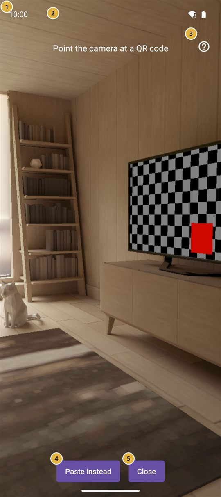
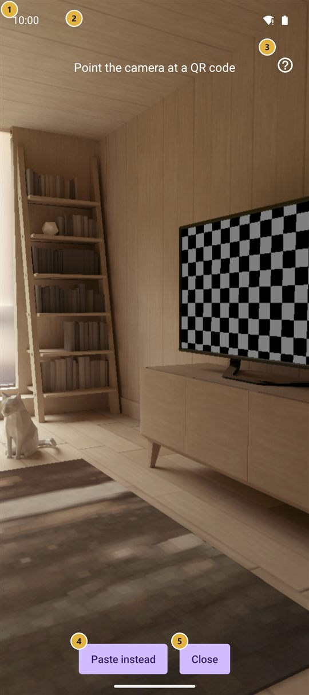

Scan QR code
What this is for
Read a QR code with the camera, for example the one another device shows to share a live broadcast. The code goes straight back to the screen that asked for it.


In this order
- Allow the camera when Android asks. The camera reads the code without storing or sending any picture.
- Point the camera at the QR code 1 and hold it steady. The scan ends by itself as soon as the code is read.
- If the camera cannot be used, press Paste instead 4 to take the text from the clipboard.
- Press Close 5 to leave without a result.
The elements
1Camera viewfinderWhat the camera sees.
The whole screen is the viewfinder. The code can be anywhere in it; it only has to be sharp and fully in view.
2HintA reminder of what to do.
Tells you to point the camera at a QR code.
3HelpOpens this page.
Back returns to the camera.
- Shortcut
- F1
4Paste insteadTakes the text from the clipboard instead.
For a code you were sent as text, or when there is no camera or no camera permission. If the clipboard is empty, the app says so.
- Undo
- Close leaves without a result.
5CloseLeaves without a result.
Returns to the screen that opened the scanner, as the Back button does. Nothing is imported.